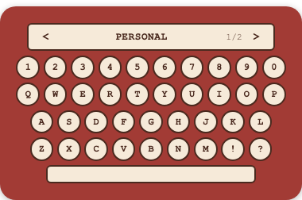
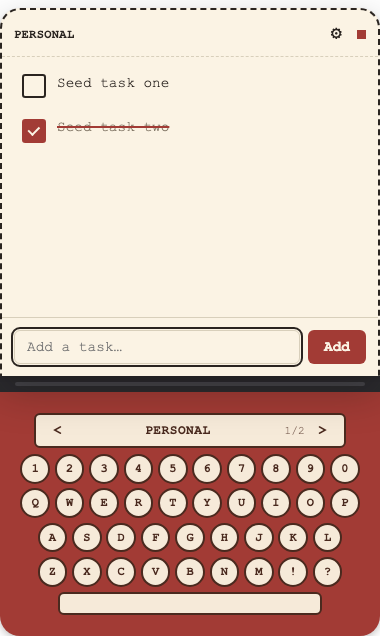
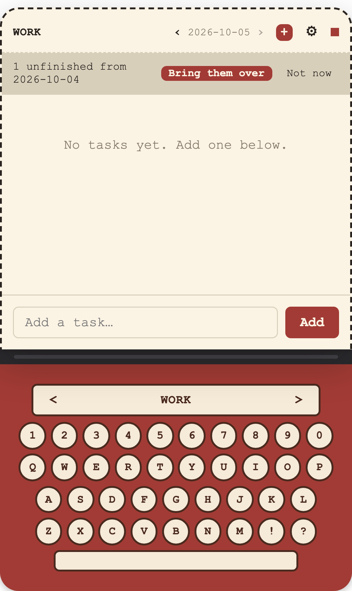

Plain Markdown
# 2026-10-05
- [ ] Water the plants
- [ ] Call mum
- [ ] Book dentist
Every task is a checkbox line in a .md file. Open the folder in Obsidian,
grep it, sync it with whatever you like.
A tiny desktop todo widget
Click the keyboard and a paper sheet slides up with your tasks. They live in plain Markdown files you own, so they work with Obsidian too. No account. No cloud.
macOS (Apple Silicon) and Linux x86_64 · Free · MIT licensed
· try the keys, the arrows and the red +
What it does
One widget on your desktop, one folder of notes. That is the whole idea.
# 2026-10-05
- [ ] Water the plants
- [ ] Call mum
- [ ] Book dentist
Every task is a checkbox line in a .md file. Open the folder in Obsidian,
grep it, sync it with whatever you like.
Each list is a folder of YYYY-MM-DD.md notes. The red
+ starts today's note. Step back through older days with the
arrows.
Did not finish yesterday? One press carries the unfinished tasks into today's note. Or say "Not now" and start clean.
Work, personal, reading: each list is its own folder. The
< NAME > arrows above the keys switch between them.
Warm Ivory paper or a dark Midnight desk. Try them: these buttons, or the sun in the header, restyle this whole page.
Your tasks never leave your disk. Typewriter makes no network call unless you press "Check for updates".
The real thing



Download
Free and open source. One command installs it on macOS (Apple Silicon) and Linux (x86_64). Paste it into Terminal.
curl -fsSL https://raw.githubusercontent.com/nipunarora8/Typewriter/main/install.sh | shPrefer a file? Download it yourself from the latest release:
.dmg and drag Typewriter to Applications.xattr -dr com.apple.quarantine /Applications/Typewriter.appThen run it. No root needed:
chmod +x Typewriter*.AppImage
./Typewriter*.AppImageUnsigned builds. Typewriter is not code-signed or notarized. The install command avoids the macOS “damaged” warning. You can read the installer and every line of the source, and build it yourself.